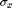
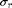
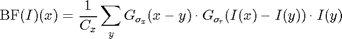
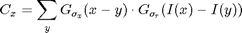
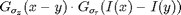

BILATERAL_BASE - Base function for standard Gaussian bilateral filter.
Contents
Description
Perform bilateral filtering on monochrome images following the approach of [TM98]. Both the domain and range filters are Gaussian filters.
Algorithm
The bilateral filter is a spatially varying filter that better preserves edges than the Gaussian filter.
Given a spacial width  and a range width , the filter opterates as:

with the normalization factor:

at a given pixel x, it corresponds to an averaring with the data-dependant kernel .
Syntax
F = BILATERAL_BASE(I, sigma_d, sigma_r);
Inputs
I : input image, possibly multispectral.
sigma_d : standard deviation of domain filter (in pixels); sub-pixel values quantized to even fractions, i.e. in steps of 0.2.
sigma_r : standard deviation of range filter; value in range [0,1] (relative to colorspace range which is normalized to 0 - 1).
Output
F : filtered image.
Reference
[TM98] C. Tomasi and R. Manduchi: "Bilateral filtering for gray and color images", Proc. IEEE ICCV, 1998. http://ieeexplore.ieee.org/xpls/abs_all.jsp?arnumber=710815&tag=1
See also
Related: BILATERAL, BILATERALSTACK_BASE. Called: GAUSSWIN.
Function implementation
function F = bilateral_base(I, sigma_d, sigma_r)
[X,Y,C] = size(I);
deal with multispectral images
if C>1 F = I; for i=1:C F(:,:,i) = bilateral_base(I(:,:,i), sigma_d, sigma_r); end return end
main computation
I = rescale(I); % normalize image range to 0 - 1 F = I; % initialize output;
initialize domain filter kernel
d_filter = gausswin(5*sigma_d); % see "doc gausswin" for details filtlength = length(d_filter); % filter length determined by domain if filtlength == 0 F = I; return; end d_filter = d_filter*d_filter'; % 2D filter
initialize range filter
if sigma_r == 0 sigma_r = eps; end mu_r = I; % Extract means for range filter I = padarray(I, floor(filtlength/2)*[1,1]); % zero-padding for filtering k = zeros(size(F)); % Initialize normalizing factor
filter using sliding window and accumulate (more efficient than px by px)
for a = 1:filtlength for b = 1:filtlength win = I(a:a+Y-1,b:b+X-1); % sliding window r_coeffs = exp(-((win-mu_r).^2)./(2*sigma_r^2)); % range filter coefficients d_coeff = d_filter(a,b); % domain filter coefficient F = F + d_coeff*r_coeffs.*win; % accumulate k = k + d_coeff*r_coeffs; end end
normalize filter to 0 gain
F = F ./ k;
end % end of bilateral_base